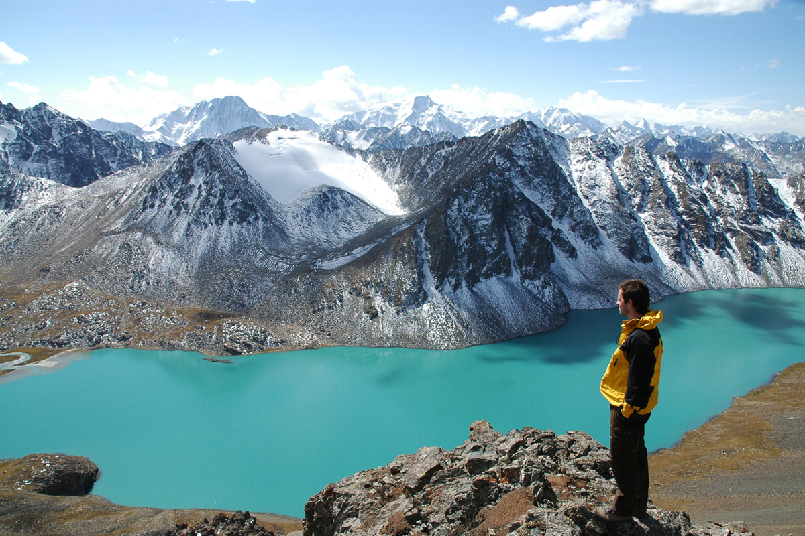
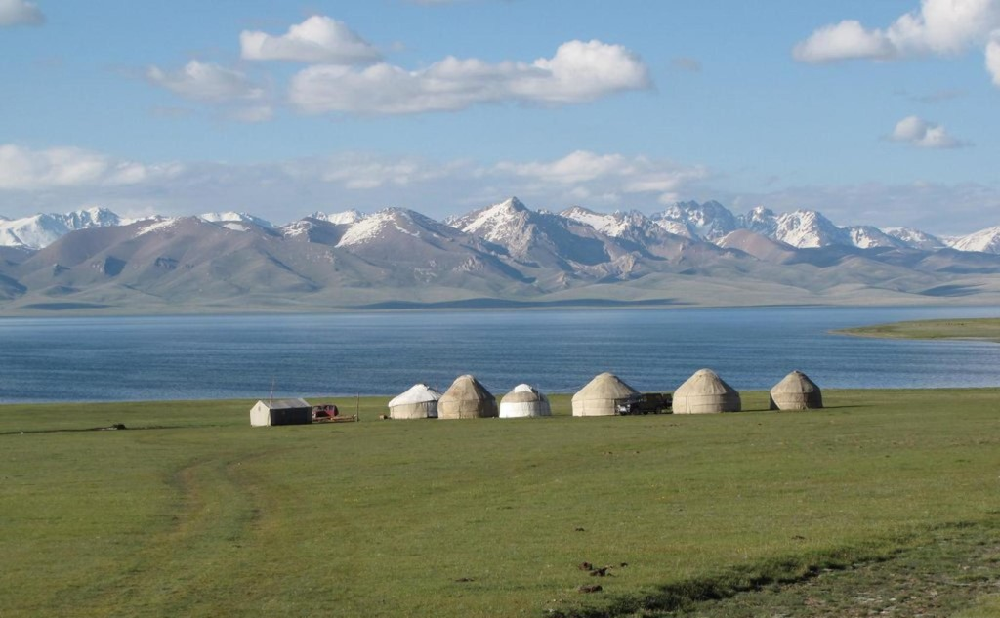

Issyk-Kul is a closed lake in the mountains of the Northern Tien Shan in Eastern Kyrgyzstan.
It is the seventh deepest lake in the world, the tenth largest lake in the world by volume
and the second largest salt lake after the Caspian Sea
Lake Sary-Cheleck
Sary-Chelek is a freshwater dammed lake in Kyrgyzstan.
It is located on the territory of the Sary-Chelek State Biosphere Reserve,
near the junction of the Chatkal and Atoynak ranges, in the Western Tien Shan.
Belongs to the basin of the Kara-Suu river, the right tributary of the Naryn.
Is one of the largest lakes in Kyrgyzstan

Lake Ala-Kul
Ala-Kul is a large alpine lake of glacial origin, located in the eastern part of the Terskey-Ala-Too
ridge on the southern shore of Lake Issyk-Kul, near the city of Karakol. The lake is located in a vast
depression between the Karakol and Altyn-Arashan gorges and has no runoff.
The name of the lake is translated from Kyrgyz as “variegated lake” and it is the best match for this place.
Ala-Kul really amazes with its colors: bright turquoise water coexists with non-melting snow even in summer,
green grass and mountain flowers of all kinds of shades.

Lake Son-Kol
Songkol is a large alpine lake sandwiched in a depression between the inner spurs of the Tien Shan.
Located between the Sonkeltau and Moldotau ridges, at an altitude of 3016 m above sea level
in the northwestern part of the Naryn region. Is a potential object of ecological tourism